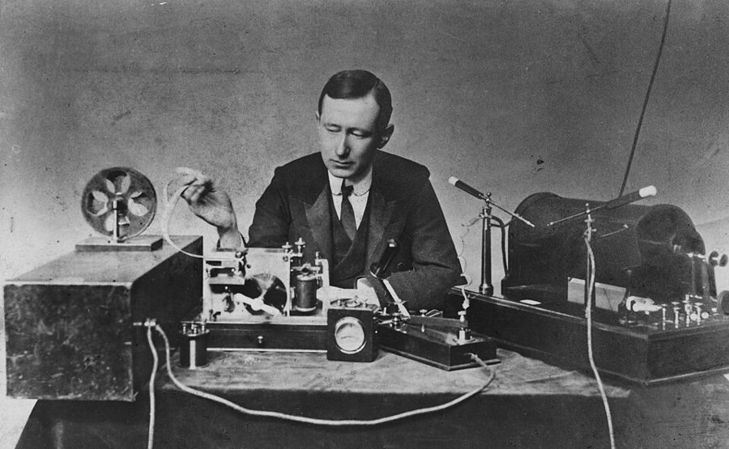
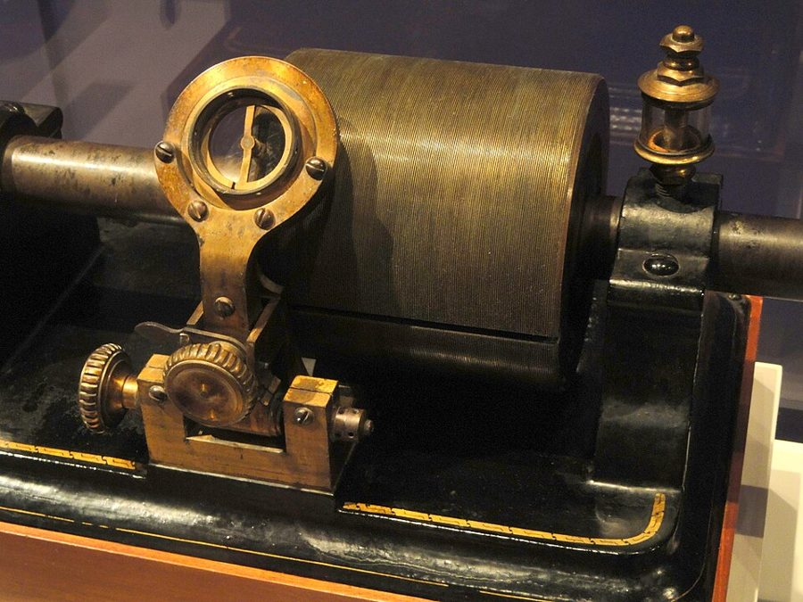
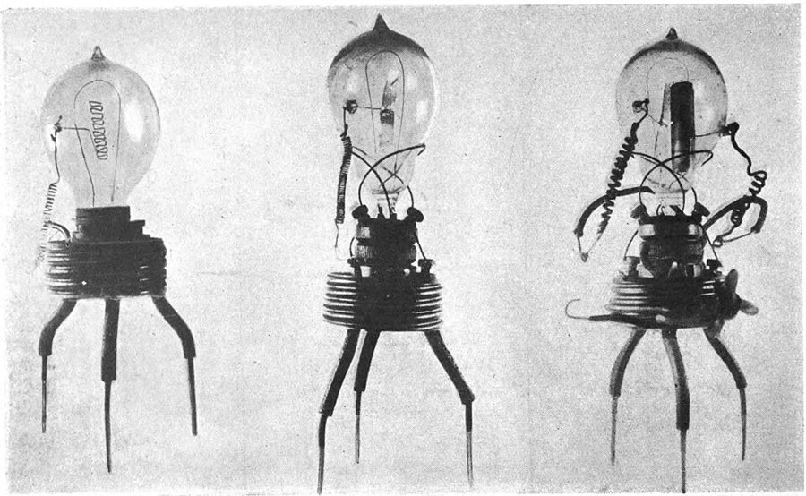
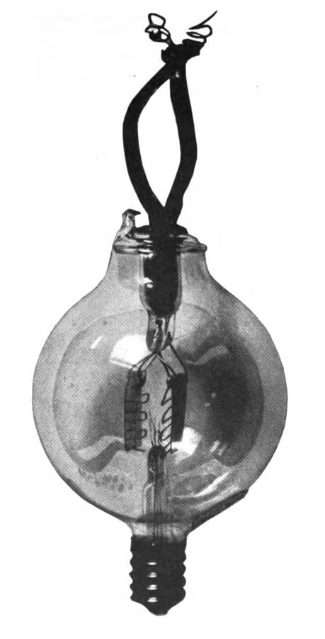

lines of force
… conceived of lines of force as …
力线（磁力线、电力线）
铁屑排出的那些线。同句的 perturbation 是「扰动」，物理里常见。
04a 讲电怎样做功、怎样送进千家万户；这一页讲电磁的另一种用处：送信息。§7 先回到法拉第的「场」，麦克斯韦把它写成方程，预言了电磁波，作者在这里难得地谈了一段自己的科学观。接着是一串好看的发明：电报、越洋电缆、无线电报、电话、留声机。最要紧的是两样原理：电容和线圈来回倒能量，是电路版的秋千；电子管能放大，做出稳定的载波，声音才上得了天。
04a 是电力那条线：电荷、法拉第的电磁感应、发电机、交流和变压器、电站和电网。这一页还是第 4 章，换成信息那条线：从场和电磁波讲起，经过电报、无线电、电话、录音，落到电子管和调幅调频。§11 的三极管和 §12 的载波，第 5 章讲晶体管和手机时都会回来找它们。
别被带歪：§9 讲 LC 振荡时说电容放完电那一刻线圈里没有电流，反了：那一刻电流最大，能量全在线圈的磁场里，正像秋千在最低点跑得最快。
收音机里没有一样东西在动，它怎么从满天的电波里挑出一个电台，再把人声还原出来？
读的时候带着这几个问题，读完回来对照「检查一下理解」。
原书这一章没有小标题，一口气写下来。下面的节是本站按段落分的：粗体是本站起的节名，后面是档和英文词数；再下面是这一节开头的几个英文词，在 Kindle 里搜它就能跳过去。读完打个勾。
先把这一页用到的几个概念用书外的例子讲一遍。作者拿它们推出什么，读原书时自己看。后面各页用到时会链回这里。
磁铁上撒一层铁屑，轻轻一敲，铁屑排成一圈圈从一极绕到另一极的线。法拉第由此想到：磁铁周围的空间本身处在某种状态里，放进去的铁屑、电荷都会受力。这片受影响的空间叫场。地球周围有引力场，电荷周围有电场，电流和磁铁周围有磁场。
麦克斯韦把电和磁写进一组方程，推出：变化的电场生出磁场，变化的磁场又生出电场，两者互相推着往外传，这就是电磁波，算出的速度正好是光速。光、无线电、X 射线都是它，只是频率不同（见「这一页在做什么」那张图）。书里说伽马射线的波长以纳米计，10²⁰ 赫其实约 3 皮米，再小一千倍。
在这一页：§7 讲法拉第到麦克斯韦；§9 的天线、§12 的载波都是这种波。手机无线充电靠的是电磁感应。
电容存电荷，能量在两块板之间的电场里；线圈通了电流，能量在磁场里，而且电流不肯突然变。充满电的电容接上线圈：电容放电，电流渐渐变大；电容放空那一刻电流最大；线圈推着电流继续走，把电容反向充满；再倒回来。
这正是第 2 章的共振：电路有自己的固有频率 f = 1 / (2π√LC)。线圈 240 微亨配电容 100 皮法，约 1027 千赫，落在中波广播里；电容加到 4 倍，频率减半。收音机拧旋钮改电容，让电路的节奏对上电台。电阻像空气阻力，让振荡衰减。天线常取波长的四分之一。
在这一页：§9 用赫兹的火花隙讲它，§12 调台又用一次。线圈、电容的数是本站举的例子，书里没有。
电子管是抽了真空的玻璃泡。灯丝（阴极）烧热后会放出电子，书末 Glossary 叫它热电子发射。对面的金属板（屏极，即阳极）接正电压，电子被吸过去，电路就通；接负电压，电子几乎过不去。这是二极管：电流只许单向走。电子从阴极跑向阳极，习惯说的电流方向正好相反。
三极管在两极之间加一层栅极。它离阴极近，电压动一点，到屏极的电流就变很多，像手轻轻一拧就能开大水的龙头。多出来的能量来自屏极那边的电源，不是凭空来的。
在这一页：§11 讲单向、放大、做载波。第 5 章说晶体管的基极像三极管的栅极。
人声只有几十到几千赫，直接发不出去：1 千赫的波长是 300 千米，天线没法造，各台也会挤成一团。办法是让一个稳定的高频波当「车」，叫载波，每个台占一个频率；把声音装上去叫调制，收音机调到那个频率再卸下来叫解调。调幅（AM）改载波的强弱，调频（FM）改载波的疏密。
火花发出的波一阵阵衰减、频率又散，当不了车。电子管放大器把一部分输出同相送回输入，每一圈补上耗掉的能量，像掐准时机推秋千的人，振荡就稳住了。带宽是一个信号占的频率范围，FM 台占得宽，音质好；程序员说的带宽是每秒传多少数据，频带越宽能传得越多。
在这一页：§11 讲反馈怎样做出载波，§12 讲 AM 和 FM 的取舍。第 5 章讲手机时还用「载波」。
书里点名的人、发明和工程，挑读懂这一页用得上的讲。按在书里出现的顺序排，节号是你在书里哪一节遇到它。
他 1860 年代写出的方程，把当时已知的电和磁的规律收进一组式子，还多推出一样东西：一种以光速传播的波。他由此认定光就是电磁波。作者说这是科学史的转折点，爱因斯坦等人后来的相对论、量子力学都建在上面，并借科学史家 Thomas Kuhn 的说法称之为一场科学革命。他 48 岁就去世了，没等到 1888 年赫兹在实验室里测到这种波。
作者先说他不认麦克斯韦的理论，引了他两句话；第二句是 1904 年说的，书里说是他去世前不久，其实他 1907 年才去世。接着列他的功劳：重述热力学两定律，提出绝对温标（温度单位开尔文就是他），给费兰蒂当顾问，推统一的单位制。§8 里他是越洋电缆的主心骨：1858 年他的镜式检流计灵敏到能收越洋的微弱信号；1865 年的缆铺到半路断了，1866 年新缆铺成，旧缆也捞起来接通。书里有一处拼成 Thompson，和 03a 的伦福德（Benjamin Thompson）不是一个人。
意大利政府不感兴趣，他就去了英国，在那里办公司、做实验。作者说他 1896 年那次传的还是摩尔斯码的点和划，不是人声，但也是无线电的开端。1901 年那次是从英格兰西南角的康沃尔发、在纽芬兰（今属加拿大）收，收到的是摩尔斯码的一个字母。1909 年他和德国物理学家 Karl Ferdinand Braun 分享了诺贝尔物理学奖。§9 里作者说他读了赫兹和俄国人 Popov 的工作，用一根长杆收电磁波，天线（antenna，意大利语的「杆子」）由此得名。

本站看，这正是麦克斯韦理论要过的那种检验：方程说有这种波，赫兹真把它造了出来、测到了。作者拿他的火花隙发射器讲 LC 振荡（见概念块）。同一段后面是特斯拉（04a 讲过他）：1893 年他把接收线圈调到和发射线圈同一个频率，让接收的输出大大增强，这就是调谐；1898 年他在纽约展示了一条无线电遥控的船。
他想让一根线同时传几路电报，每路用一个不同的音高。1876 年他对着线叫隔壁的助手 Thomas Watson 过来，这是书里讲的第一通电话。作者拿电话讲最简单的信息处理：碳粒话筒把声压变成电流的强弱，扬声器再把电流变回振动。今天手机里的话筒原理不同，道理一样：声音变电，电再变声音。
爱迪生（04a 讲过他）1877 年想把电报信号压在纸带上，进而想到把声音的振动刻下来、再放出来。最后用的是包着锡箔的金属圆筒，一套膜片和针刻，一套放。机器是他的机械师 John Kruesi 照图做的（书里拼作 Kreusi）。作者说「录音就此发明」；严格说，法国人 Scott de Martinville 1857 年的声波记振仪已经能把声音画成线，只是放不出来，2008 年研究者扫描他 1860 年的记录，才第一次把它放出声。爱迪生的是第一台能录又能放的机器。

书里先讲费森登 1900 年第一个试着用无线电传人声，可火花发出的波一阵阵衰减、频率又散，声音几乎听不清。弗莱明的二极管起初用来检波，从收到的高频信号里把有用的那部分取出来。德福雷斯特在里面加了一道栅极，叫它 Audion：1907 年 1 月申请专利，1908 年批下。他自己并不清楚它为什么能放大，还以为管里残留的气体必不可少；它后来成了可靠的放大器，要靠把管子抽得更真空。


书里只给了他一句。他在这之前还发明了超外差接收机，此后几十年的收音机大多照这个办法做。调频的专利让他和美国无线电公司（RCA）打了多年官司。书里还给了英国广播公司 BBC 的两个年份：1922 年起的早期广播是 AM，1955 年开始 FM。
读英文原书时值得停一下的词和句：工程里的熟词生义、英式说法、作者的比喻。灰色斜体是原句里连续的几个词，在 Kindle 里搜它就能找到；标「每个字都认识」的，是每个词都眼熟、合起来意思却变了的，最容易读错。点「记下」收进词本。
下面是作者在这一章里的主张，本站按主张之间的逻辑重排，不按原书顺序；每条后面是节号，拿不准就回书里那一节再读一遍。
法拉第凭铁屑的图样和大量实验，想到电磁力分布成清楚的几何图样。麦克斯韦把这些直觉写成场论，光从此被理解成电磁波。作者借 Kuhn 称之为科学革命，又说当时连汤姆孙都不认这套理论。
§7作者说麦克斯韦的路子预示了现代科学思维。一个理论预言了新东西，就该去找，找到了算过一关；过了多少关，将来都可能有一关过不去。他说麦克斯韦的理论当即过了几项大检验，电磁辐射引出了无线电、雷达和电视。
§7no matter how many tests are passed, there may still be a test in the future that our theory will eventually fail— §7。本站译：无论通过了多少次检验，将来仍可能有一次检验，我们的理论终究过不去。
从信鸽、烽火、旗语到电报是顺理成章的一步：先是一个字母一根线，再到检流计和摩尔斯码，再到越洋电缆；马可尼让电报不用线。贝尔为改进电报做出了电话，爱迪生从电报纸带想到录音。
§8 §10费森登拿话筒去调制火花发射器，声音几乎听不清：火花发出的波会衰减，频率又散。电子管放大器加上同相反馈，振荡不衰减、频率可控，成了载波。作者说它对无线电、电视、雷达、电话、计算机和工业控制都必不可少。
§11AM 让载波的强弱跟着信号变，简单耐用，但家电和照明干扰多，夜里还串台；FM 改的是频率，音质好、干扰少、能带更多信息，可它的高频要视距，大山就挡住了，AM 的低频能被电离层反射回来传得更远。
§12Electromagnetic work was being used to send information, but it wasn’t long before it was beginning to be used to process information— §12。本站译：电磁做的功被用来传送信息，没过多久，它又开始被用来处理信息。
合起来：这一页讲电磁做的另一种功：送信息。法拉第的场到麦克斯韦的方程，告诉人有电磁波；电报、无线电、电话、录音一路把它用起来；电子管做出的载波让人声能上天。下一步是用电磁处理信息。
这一章合起来：第 4 章是作者的电磁时代。法拉第证明电能做功、功也能变成电，发电机和电动机由此而来；送电时电压越高损耗越小，变压器让交流胜出，有了大电站和电网。另一条线从法拉第的场到麦克斯韦的方程，预言了电磁波，作者借 Kuhn 称之为科学革命，并说理论只能不断受检验、永远不能确定。电磁波接着改变了传信息的方式：电报、无线电、电话、录音；电子管做出载波，调幅调频把声音送上天。
书 2012 年出版。下面挑出这一页里能被后来的研究或事情检验的说法，分「书里 / 当时 / 今天」几栏，并给一个结论。结论判的是标题里「书里的说法：」后面那一句。全书的这一节汇总在今天怎么看。
读完作者的主张，再看它站不站得住。每一块摆出三样：主流怎么看，作者怎么看，本站的评论。最后一句是本站对这一页的总体判断。
主流看法：科学哲学里，Karl Popper 主张理论只能被反驳、不能被证实，经受住越多反驳的尝试越可信，但永远是暂定的。Thomas Kuhn 在《科学革命的结构》（1962）里说，大多数时候科学家并不去检验基本框架（他叫范式），而是在框架里解题；反常攒多了，才会整个换掉，换的过程也不只靠逻辑。两人在「科学是不是一路检验过来」上看法很不一样。
作者的看法：理论靠检验，找到预言的新现象就算过关，但过了多少关都不能确定；麦克斯韦的理论当即过了几项大检验。§7
本站的评论：作者这段话和 Popper 很近，这一段没点他的名，是本站的联想；同一节里借的却是 Kuhn 的「革命」。这一章自己的故事更像 Kuhn：汤姆孙这样的大物理学家到 1904 年还不认。「当即过关」若指算出的波速等于光速，确实当场对上了；新的电磁波却要等到 1888 年赫兹去测，那时麦克斯韦已去世九年。
主流看法：技术史常把无线电当「理论先行」的例子：麦克斯韦的方程预言电磁波，赫兹测到，马可尼拿去用。可工程常走到理论前面：马可尼 1901 年的信号越过了大西洋，按直线传播的想法本该被地球的弯挡住；1902 年才有人提出高空有一层能反射电波的导电层，到 1920 年代 Edward Appleton 用实验证实，他因此得了 1947 年的诺贝尔物理学奖。德福雷斯特的三极管也是先造出来，后弄懂。
作者的看法：麦克斯韦的路子预示了现代科学思维：世界的细节超出常识，要靠数学去懂。§7
本站的评论：两样都对，正好是第 1 章说的做和知交替领先：理论指了方向，工程师走得比理论远，理论再回来补上电离层、真空电子学。读这一页时，可以留意每样东西是先算出来的，还是先试出来的。
主流看法：发明史里的「第一」多半有争议。无线电在俄罗斯常从 Popov 1895 年的演示算起；马可尼的一项美国专利在 1943 年被美国最高法院判部分无效，因为 Lodge、特斯拉等人有更早的工作。录音也是：2008 年研究者扫描 Scott de Martinville 1860 年的声波记录，放出了一段比爱迪生早 17 年的人声。
作者的看法：马可尼发出的是最早的无线信号之一，费森登是第一个试着无线传人声的，爱迪生的留声机让「录音就此发明」。§8 §10 §11
本站的评论：作者对马可尼用了 one of the first，留了余地；说爱迪生发明了录音，则说满了。读这一章时，把每个「第一」理解成「第一个做成某件具体的事」：爱迪生是第一个能录又能放，马可尼是第一个让无线电报越过大西洋。
本站的总体看法：这一页是全书最好读的历史段落之一，人和发明一个接一个。要带走的是三样原理：场和电磁波，LC 振荡就是电路里的秋千，电子管放大并做出载波。作者的科学观说得太顺，「第一」也要打点折扣，§9 那句电流说反了。
先在心里答，再点开。答错的那题，回书里把对应那一节再读一遍。
场是受电、磁或引力这类作用影响的一片空间，里面的电荷或质量会受力。法拉第是看了磁铁旁铁屑排出的图样，觉得电磁力分布成清楚的几何图样。
理论预言了新现象，去找，找到了就算过一关。不能确定：过了多少关，将来都可能有一关过不去。
最大，能量全在线圈的磁场里，对应秋千经过最低点、跑得最快的时候。书里这一步写反了。
改的是电容，让电路的固有频率对上电台的载波，发生共振。频率和电容的平方根成反比，电容变 4 倍，频率减半。
栅极贴近阴极，它的电压变一点，到屏极的电流就变很多。多出来的能量来自屏极和阴极之间那个单独的电源。
火花发出的是一阵阵衰减、频率很散的波，当不了稳定的载波。要等电子管加反馈做出不衰减、频率可控的连续振荡。
AM 改强弱，FM 改频率。AM 用的频率低，能被高空的电离层反射回地面；FM 的频率高，穿过电离层出去了，只能靠视距。
用一句话说这一页：
想一想：家里 Wi-Fi 用 2.4 吉赫，按书里「天线取四分之一波长」的算法，天线大约多长？和你见过的路由器天线比一比，手机里塞得下吗？
读过又忘了，从这里想起来。挑的是这一页最值得记住的例子和说法，不按原书顺序；每条后面是节号，想细看就回书里那一节。全书各页的这一节都收在全书回顾。
一句话：法拉第的场经麦克斯韦预言了电磁波；电容和线圈像秋千一样来回倒能量；电子管放大并做出载波，声音才上得了天。
法拉第看磁铁旁铁屑排出的线，想到力分布在空间里。麦克斯韦把它写成方程，算出电磁波跑得和光一样快：光就是电磁波。
§7作者的科学观：理论预言新东西，找到了算过一关，但将来总可能有一关过不去。连汤姆孙当年都不认麦克斯韦。
§7电容和线圈来回倒能量：电荷像秋千的高度，电流像速度。电容放空时电流最大，书里这一步写反了。拧收音机的旋钮就是改电容，对上电台的节奏。
§9越洋电缆的信号弱得几乎测不到，汤姆孙的镜式检流计让它收得到。热力学温标那个开尔文，也是电缆工程的主心骨。
§8三极管在灯丝和屏极之间加一层栅极，电压动一点，电流变很多。加上反馈，它做出稳定的载波，人声才能上无线电。
§11AM 简单、传得远，可干扰多；FM 音质好，但要视距。今天电动车电机的干扰，让几家车厂想把 AM 收音机从新车上拿掉。
§12